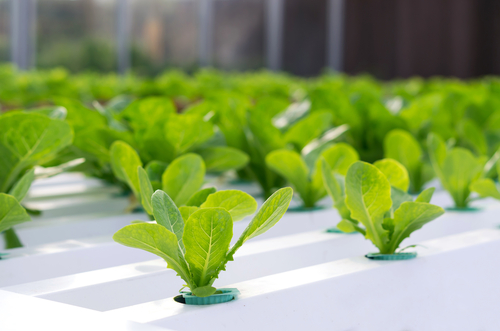

CINTAILAH LINGKUNGAN MU!
visi
misi
Mengajak masyarakat untuk sadar akan pentingnya budidaya tanaman hidroponik
Memberikan fakta dan informasi yang berkaitan dengan budidaya tanaman hidroponik
Memberikan edukasi kepada masyarakat tentang manfaat budidaya tanaman hidroponik
Mengundang relawan untuk bergabung dan menjadi bagian dari kami
